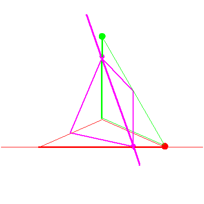
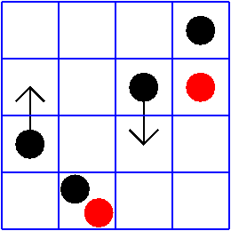

The line lying in fixed line in P3


The line lying in fixed line in P3 |
|
|  |
In the second stage of the specialization sequence, the line rotates about the point until it contains the stationary point. This forces the the solution line to rotate until it is the intersection of the fixed plane and the plane spanned by the red and green lines. This is the case (no,yes, elsewhere) in Table 2/figure 8 of GLR. While it is a stay case in Table 2, we see that the solution line does indeed move. Geometrically, this is the most interesting step in the specialization sequence for this problem. |
| This is one of the cases in the middle square of Table 2/Figure 8 in GLR. The oter case does not occur, as the condition that the line lie in the fixed plane prevents that case from contributing. |  |